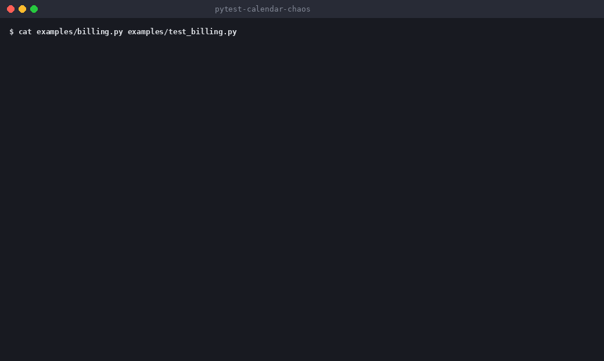

pytest-calendar-chaos
Your tests pass today. Will they pass on Feb 29? This pytest plugin runs your marked tests on leap day, month end, year end, midnight and daylight saving time changes, with the clock frozen.

The problem
Most date bugs are not exotic. A renewal function that does created_at.replace(month=created_at.month + 1) passes every test you wrote on the 15th, then raises an error on Jan 31 and on Dec 31. Nothing in a normal test run visits those dates.
Install
pip install pytest-calendar-chaosPython 3.10+ and pytest 8+. Clock mocking is done by time-machine.
Use it
import pytest
@pytest.mark.calendar_chaos(
cases=["leap_day", "month_end", "dst"], zones=["UTC", "America/New_York"]
)
def test_subscription_renewal(): ...Each marked test runs once per scenario. When one fails, the report names the scenario, the exact mocked time and a command that reruns only that scenario.
What it covers
- Leap day (Feb 29 2028), including the last microsecond of the day
- Month ends and starts, including Feb 28 and Feb 29
- Year end and the first moment of the new year
- Midnight boundaries
- Daylight saving time changes computed per time zone, including both passes through the repeated hour
Scenario IDs are stable and never depend on today's date, so a saved reproduce command keeps working. Run pytest --calendar-chaos-list to see them all.
Limits
Only the clock inside the Python process is mocked. Databases, subprocesses and C extensions that read the system clock are not. See the README for the full list.